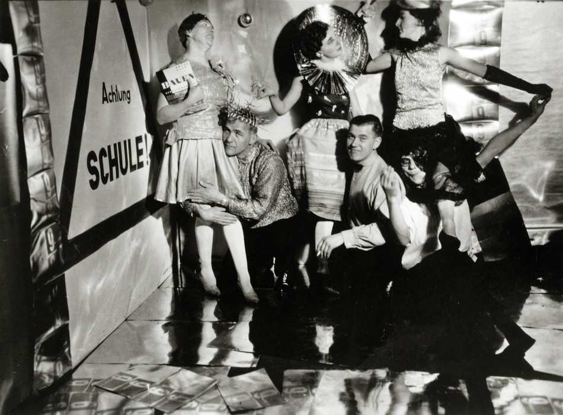

¡En 2019 celebramos 100 años de la inauguración en Weimar de la Staatliches Bauhaus!
"Achtung Schule!" (¡Cuidado, escuela!) La "Fiesta del Carnaval Metálico" en la Bauhaus, con su director Hannes Meyer, 9 de febrero de 1929.
Foto: Walter Funkat | © Stiftung Bauhaus Dessau
La Bauhaus revolucionó todas las esferas del arte con un novedoso método de enseñanza
Todas las disciplinas artísticas se reunificaron y resignificaron como elementos indispensables en la construcción del mundo moderno y la arquitectura de un nuevo tiempo